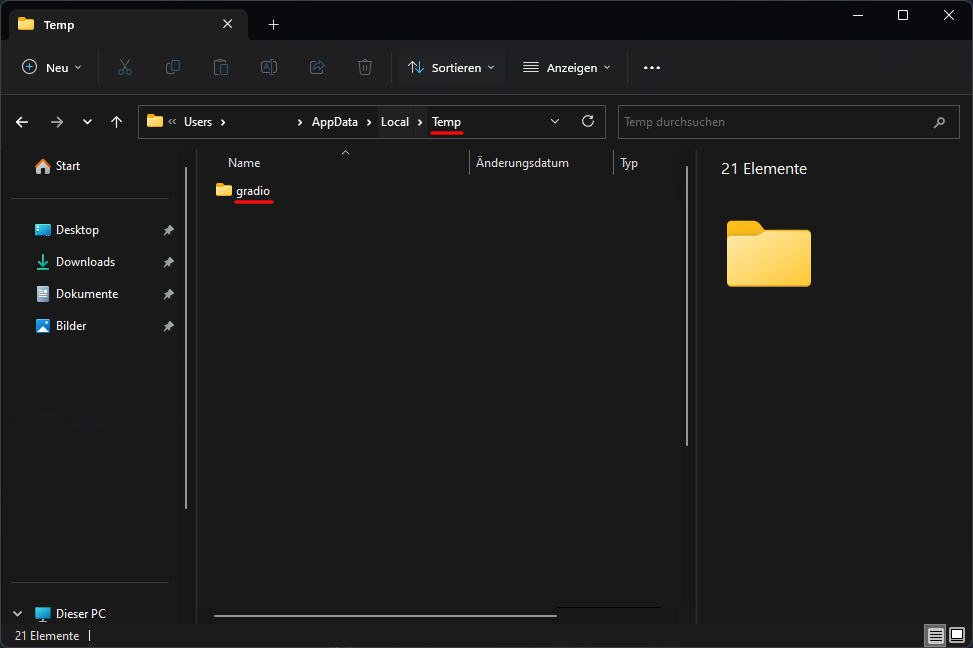

Anleitung zum Erstellen von 3D Videos
Python 3.10.6:
https://www.python.org/ftp/python/3.10.6/python-3.10.6-amd64.exe- Add to PATH anklicken
git:
https://github.com/git-for-windows/git/releases/download/v2.41.0.windows.1/Git-2.41.0-64-bit.exe- Installiere git (Wir bauchen git später für das herunterladen von Dateien aus Github)
Davinci Resolve:
- Wähle beim Exportieren bei Format das Format TIFF aus
- Achte auf die richtige Framerate und exportiere das Video
- Nun sollten alle Bilder in einem Ordner sein

tif zu jpg konvertieren:
- Dafür verwenden wir ein Python Skript
- Erstelle eine neue Datei, die auf dem Kürzel .py endet und speichere sie im gleichen Verzeichnis wie die Image Sequence
- Öffne sie und kopiere folgenden Code in die Datei uns speichere sie anschließend
from PIL import Image import os # Ordnerpfad angeben ordnerpfad = "./" # Aktuelles Verzeichnis # Durch alle Dateien im Ordner iterieren for datei in os.listdir(ordnerpfad): # Dateipfad der aktuellen Datei erstellen dateipfad = os.path.join(ordnerpfad, datei) # Nur TIF-Dateien berücksichtigen if dateipfad.lower().endswith(".tif") or dateipfad.lower().endswith(".tiff"): try: # Bild öffnen und als JPEG speichern bild = Image.open(dateipfad) neuer_dateiname = os.path.splitext(dateipfad)[0] + ".jpg" bild.save(neuer_dateiname, "JPEG") print(f"{datei} konvertiert zu {os.path.basename(neuer_dateiname)}") except Exception as e: print(f"Fehler beim Konvertieren von {datei}: {str(e)}") - Mache nun einen Doppelklick auf die Datei und lasse das Skript durchlaufen
- Nun sollten alle Bilder zwei Mal vorhanden sein aber jeweils mit einer anderen Dateiendung
Stable Diffusion WebUI für AMD:
https://github.com/AUTOMATIC1111/stable-diffusion-webui/wiki/Install-and-Run-on-AMD-GPUs- Im Terminal folgendes eingeben:
git clone https://github.com/lshqqytiger/stable-diffusion-webui-directml && cd stable-diffusion-webui-directml && git submodule init && git submodule update
- Die Dateien müssten ins Homeverzeichnis gespeichert werden
- Finde den Ordner und öffne ihn
- Öffne webui-user.bat
Stable Diffusion WebUI (nicht relevant für AMD Nutzer):
https://github.com/AUTOMATIC1111/stable-diffusion-webuiHigh Resolution Depth Maps for Stable Diffusion WebUI:
https://github.com/thygate/stable-diffusion-webui-depthmap-script- Öffne WebUI im Browser, indem du im Termianl mit Strg + Linksklick die lokale URL öffnest
- Navigiere zu Extensions und dann Install from URL
- Gebe bei URL for extension's git repository folgendes ein:
https://github.com/thygate/stable-diffusion-webui-depthmap-script
- Klicke dann auf Install
- Starte dann das Programm neu


Depth Map erzeugen:
- Navigiere im WebUI zum Tab Depth und wählen dann Single Image aus
- Lade nun dein Bild hoch und überprüfe die Einstellungen je nach Vorliebe
- Ist alles richtig eingestellt musst du nurnoch auf Generate klicken
- Beim ersten Mal kann es länger dauern, da erst noch dafür nötige Dateien heruntergeladen werden müssen
- Mehr Infos dazu sowie den Fortschritt kann man im Terminal einsehen
- Sollte es ganz am Schluss einen Fehler geben könnte es daran liegen, dass im Temporären Ornder kein Ordner erstellt werden konnte
- Um das zu beheben musst du die Suche öffnen und %temp% eingeben und mit Enter bestätigen
- Erstelle nun in diesem Verzeichnis einen Ordner namens gradio 
- Versuche nun das Generieren erneut
- Wenn alles gut läuft kannst die die Depth Map dann herunterladen, indem du sie rechts oben unter Depth Output auswählst und herunterlädtst

Eb Synth:
https://ebsynth.com/EbSynth-Beta-Win.zip- Wir brauchen Eb Synth, um die Depth Map von einem Frame auf alle Frames der Image Sequence zu übertragen
- Bei Keyframes wählen wir die Depth Map aus
- Bei Video wählen wir die den zugehörigen Frame aus der Image Sequence aus
- Keyframe und Video müssen übereinstimmen (Normalerweise sind alle Bilder nummeriert)
- Wähle unten aus, welches der erste Keyframe ist und welcher der letzte Keyframe
- Die Zahl in der Mitte stellt den aktuellen Keyframe dar (von Keyframe und Video)
- Klicke dann auf Synth